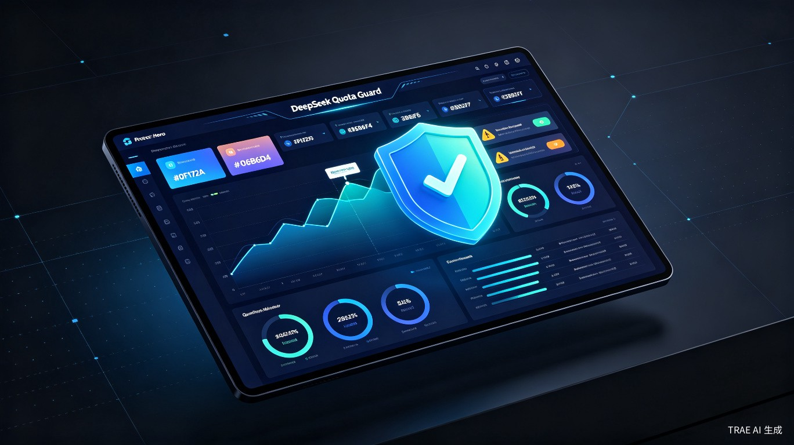
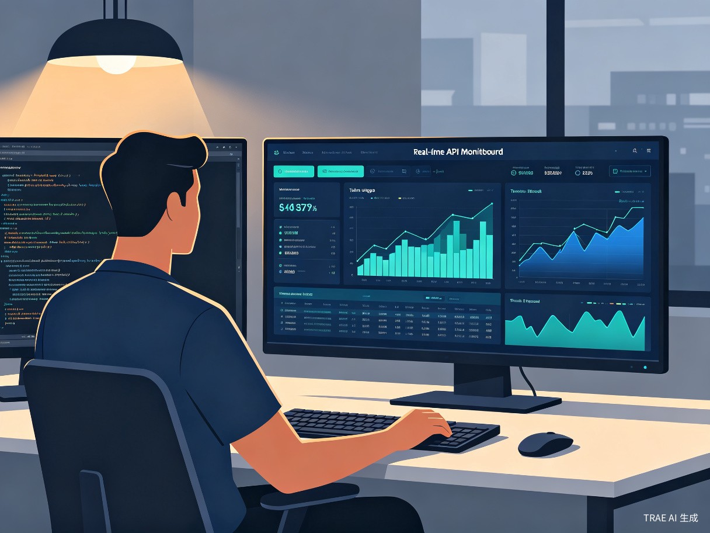

DeepSeek 用量卫士 — 为 DeepSeek API 开发者打造的实时余额监控、Token 用量分析与智能预警平台。从被动响应到主动管理，让每一分钱都花在刀刃上。

DeepSeek API 开发者在日常使用中，经常遭遇余额不足、用量超标、查询不便等困扰，严重影响开发效率与业务稳定性。
DeepSeek 官方平台的用量数据更新存在小时级延迟，用户无法获知实时消耗情况，经常在调用失败时才发现余额不足。
需要登录网页控制台手动查看余额和用量，操作繁琐且效率低下，无法快速获取关键信息。
官方没有余额不足的主动通知机制，用户只能在调用失败后被动发现，导致业务中断和成本失控。
月度用量需手动导出 CSV 文件分析，缺乏可视化图表和趋势分析，多 Key 管理困难且无法便捷对比。
DeepSeek Quota Guard 是一款跨平台的桌面应用 / 网页仪表盘，为 DeepSeek API 开发者提供全方位的用量管理解决方案。
核心定位：实时监控 DeepSeek 账户余额、Token 用量趋势和消费明细，并提供低余额预警与用量报表功能的综合性管理平台。
产品形态：支持 Web Dashboard 和桌面客户端双形态，覆盖 Windows、macOS、Linux 三大平台，开发者可以随时随地掌握账户动态。
设计理念：以"打开即见"为体验目标，将原本需要数分钟的手动查询和 CSV 分析工作缩短为零等待体验，让数据驱动决策变得触手可及。
技术优势：通过 DeepSeek 官方 API 接口获取数据，结合本地缓存与智能刷新策略，在保证数据时效性的同时降低 API 调用频率。
从数据采集到智能预警，四步实现全方位用量管理。
面向所有使用 DeepSeek API 进行开发与创作的用户群体。
使用 DeepSeek API 构建应用的独立开发者与创业者，需要随时了解剩余额度，避免因余额不足导致 API 调用失败。
企业内部使用 DeepSeek API 的 AI 应用团队与运维人员，需要按项目/时间段统计 Token 消耗和费用，进行成本分摊和预算规划。
通过 API 调用 DeepSeek 模型进行内容生产的研究者与创作者，需要分析不同模型的消耗趋势以优化调用策略。
覆盖开发、运维、分析等全链路场景，为不同角色的用户提供精准支持。
开发者在构建应用时，实时掌握 API 调用状态与余额变动，无需频繁切换到 DeepSeek 控制台。仪表盘自动刷新，关键指标一目了然。
当余额低于安全线时，系统自动推送桌面通知和邮件提醒，确保开发者第一时间获知并采取行动。

项目负责人设定余额阈值后，系统在余额接近临界值时主动推送预警通知，支持桌面推送、邮件、Webhook 等多种通知渠道。
结合用量趋势分析，帮助团队提前规划充值节奏，避免因余额耗尽导致的服务中断，实现真正的防患于未然。
通过多维度可视化图表，帮助用户快速定位高消耗场景，做出有针对性的优化决策。
了解各模型的 Token 定价，是优化调用策略、降低成本的第一步。以 DeepSeek V4-Pro 为例，缓存命中与未命中的价差高达 120 倍。
| 模型 | 缓存命中 (输入) | 缓存未命中 (输入) | 输出 |
|---|---|---|---|
| DeepSeek V4-Pro | ¥0.025 / 百万 Token | ¥3.0 / 百万 Token | ¥8.0 / 百万 Token |
| DeepSeek V3 | ¥0.1 / 百万 Token | ¥1.0 / 百万 Token | ¥2.0 / 百万 Token |
| DeepSeek Chat | ¥0.1 / 百万 Token | ¥1.0 / 百万 Token | ¥2.0 / 百万 Token |
| DeepSeek Coder | ¥0.1 / 百万 Token | ¥1.0 / 百万 Token | ¥2.0 / 百万 Token |
DeepSeek Quota Guard 不仅是一个监控工具，更是开发者实现成本优化和效率提升的战略级助手。